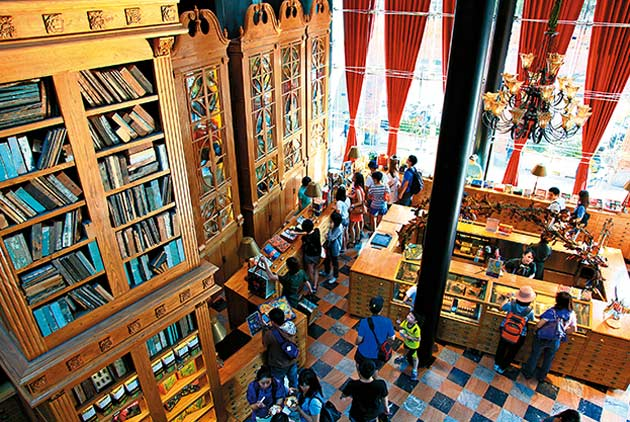

台北美食集合
Burger Ray（位於忠孝延吉街口的巷子裡）
這間台北餐廳製作一顆專屬於自己口味的個性漢堡吧！除了配料可以自由選擇外，連肉排的熟度也能挑選，店內所有的漢堡肉都是選用相當於牛排館等級的美國Choice，鮮甜的肉汁被麵包完全吸收
搭配自己選擇的辛香料、蔬菜和醬料，就算熱量破表也甘願！
詹記麻辣火鍋(位在新莊)
台北火鍋必吃清單之一的「詹記麻辣火鍋」，店內有著大量的復古元素，走進店內猶如踏進時空隧道
映入眼簾的是滿滿的懷舊和樸實感，招牌鴨血和肥牛更是深受各界老饕肯定，用平凡食材吃出新高度和感動
小小樹食（鬧中取靜的敦化南路上）
不只是近幾年IG人氣打卡網紅餐廳，最重要的是他們用心的蔬食料理改變了大眾對素食的既定印象！。
這間台北餐廳裝潢也呼應蔬食形象，採光自然，以大樹為主體充滿生機。
